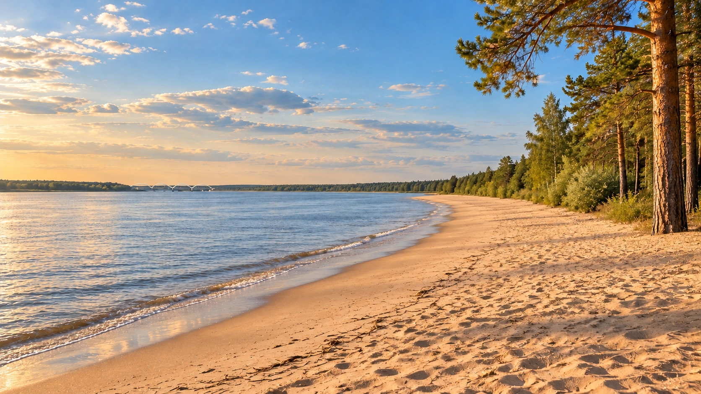
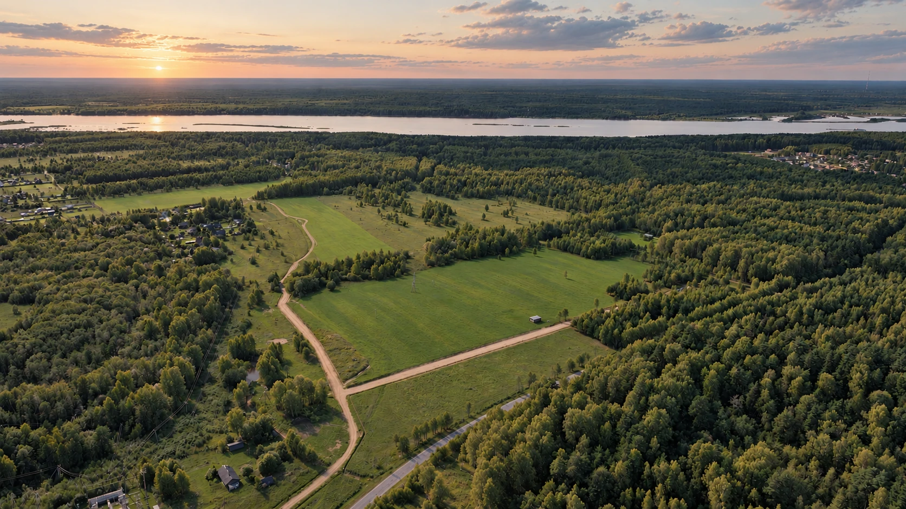
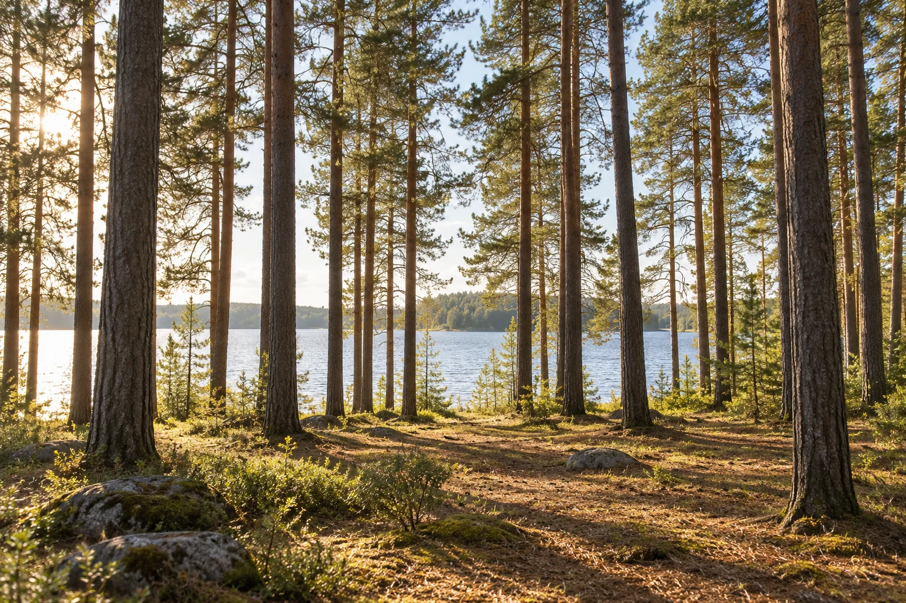
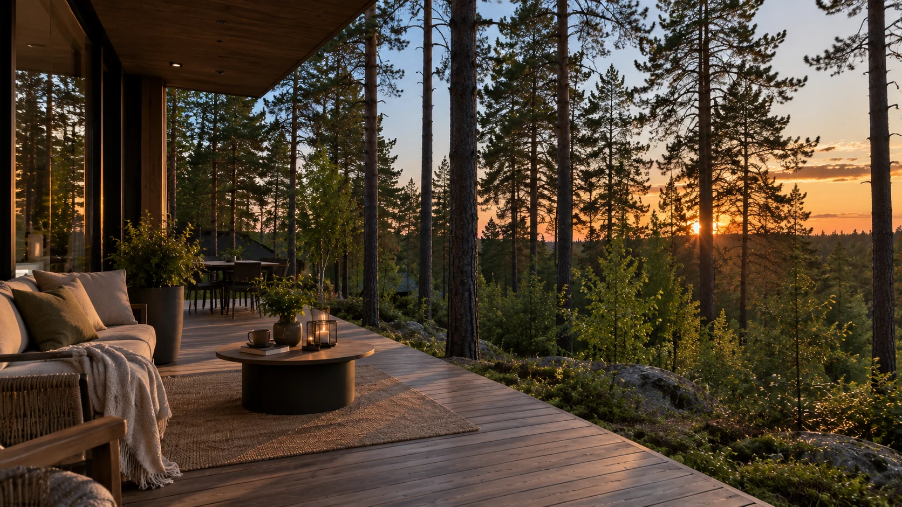

4 neighbourhoods
Different plots for your plans for life outside the city.

Land plots near Vysokovsky Bor and Chyornaya Rechka. On the road to Koprino, not far from the Volga.
from RUB 45,000 per sotka
Different plots for your plans for life outside the city.
Land for building your own house.
Clean air, forest and natural surroundings near your home.
Buying a plot without intermediaries or unnecessary links in the chain.
“Novye Vysoka” is among the forests of Rybinsk District, next to the “Vysokovsky Bor” children's camp (formerly “Chyornaya Rechka”). On the road to Koprino — a popular place for recreation on the Volga. It is quiet and green here, with space for your own house.
View the location
The forest, the Volga and a house outside the city — a few short stories about how your day here could unfold.
Real aerial footage of the site and walks with the project's founder. Get to know the place even before your trip.
By car or public transport — choose a convenient route to the project.
The four neighbourhoods of the “Novye Vysoka” project are among the forests of Rybinsk District. Choose the area you are interested in and get to know its master plan.
Download the project presentation
Forest walks, relaxation by the Volga and everything needed for everyday life. See what is near “Novye Vysoka”.

The Magazin Zemli team supports the transaction: from choosing a plot and checking documents to registering ownership.
The Magazin Zemli team has worked with land projects in Yaroslavl Region for more than ten years. The company's founder, Dmitry Rodionov, now heads the “Novye Vysoka” project and is responsible for its development.
The team's experience includes not only selling plots but also taking part in the development of areas outside the city, including the projects Koprino and “Yaroslavskoye Vzmorye”. This experience helps us look at “Novye Vysoka” as a whole: from the legal preparation of land and arranging access to future infrastructure, landscaping and scenarios for life outside the city near the forest and the Volga.
“Land is associated with confidence in the future, the opportunity to create your own space and pass it on to the next generations of the family.”
What helps you make a decision calmly and without unnecessary questions.
Briefly about the land, roads, utilities and purchase.
The plots are sold by the owner. Magazin Zemli represents the project and supports the buyer.
Individual housing construction (IZHS). You can build a detached residential house, taking into account building rules and restrictions on the plot.
Settlement land. Before purchase, the information for the selected plot is checked against an extract from the Unified State Register of Real Estate.
Year-round access is stated for plots in Degtyaritsy and Nikolo-Korma. It is best to assess the road to the specific plot during a viewing.
An application is submitted to the network operator. The cost, time and list of works depend on the technical conditions for the specific plot.
We check water, sewerage, gas and internet separately for each plot. The project team will tell you the connection terms.
Before you choose, the team will state the full plot price and separately list any additional costs, if there are any.
The owner provides instalments over up to 12 months. The initial payment is 30%; the balance is paid according to the contract schedule.
Until full payment, the plot is pledged to the seller. The encumbrance is recorded in the Unified State Register of Real Estate.
Yes. Book a tour to see the neighbourhoods, access and surroundings of the selected plot.
Yes. The team will record a video of a suitable plot and help you compare options remotely.

Come for a viewing of the “Novye Vysoka” site: get to know the neighbourhoods, see the plots, access and surroundings.